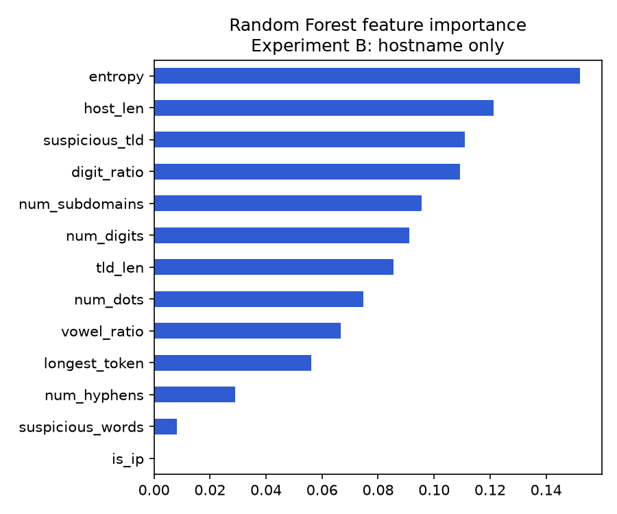
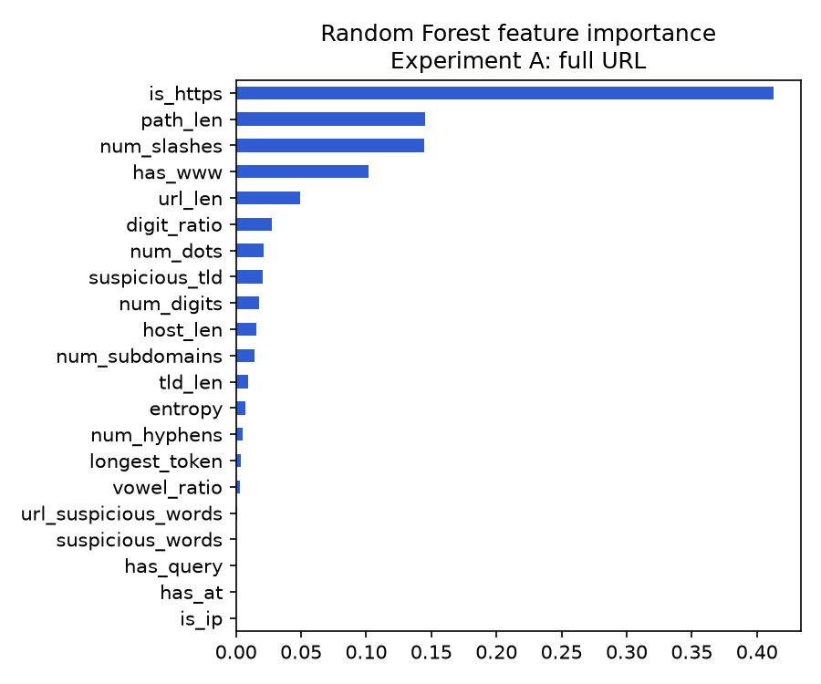
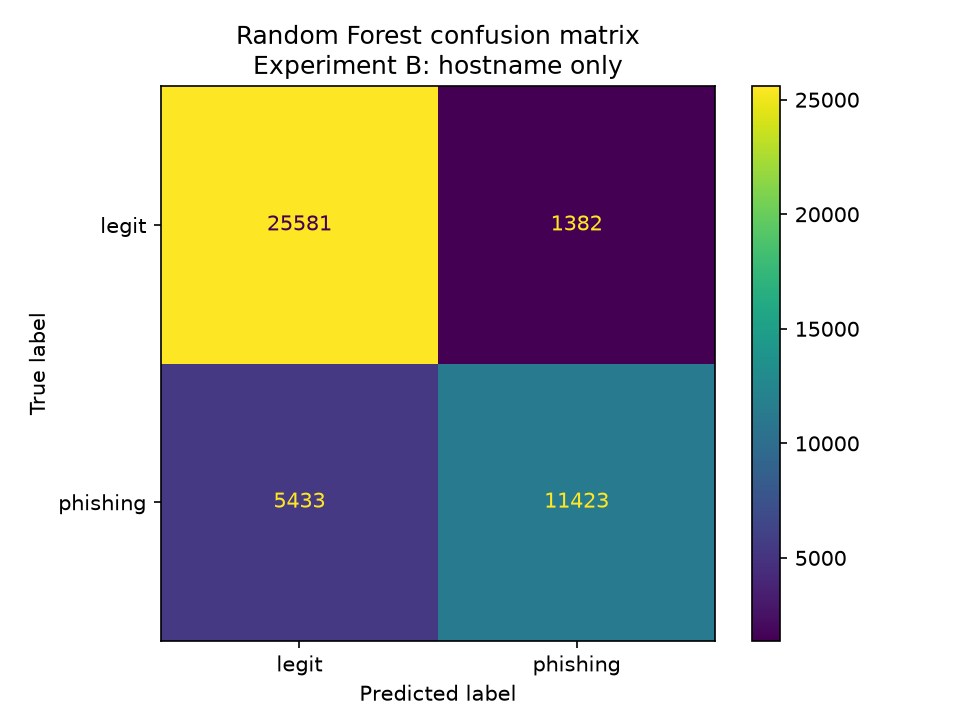
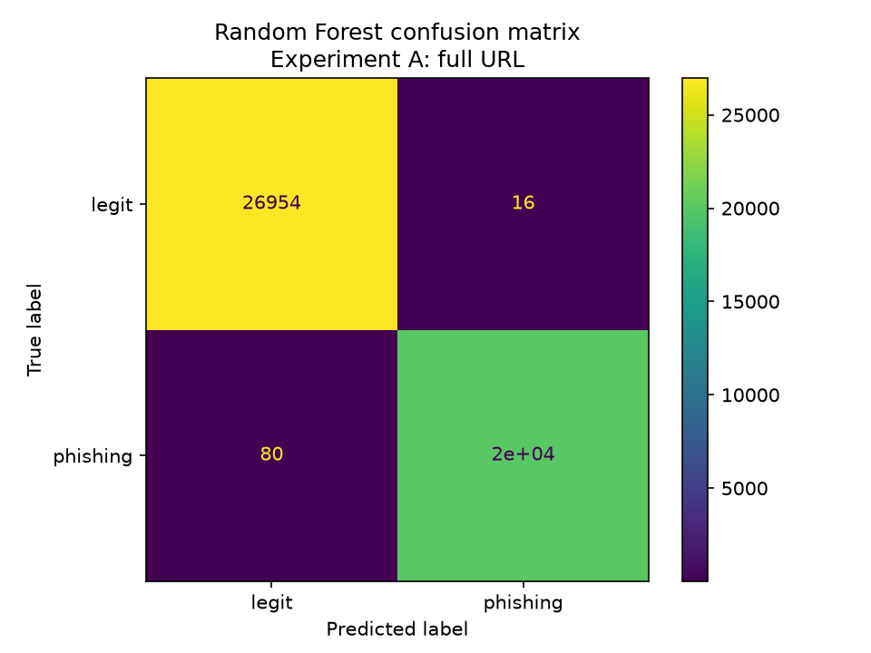

Phishing URL Detection with Machine Learning
Subhan Huseynov · B.01.509.22.020
Practical / implementation-based project · 2026
Use ← → or the buttons below. Press F for fullscreen.
Why phishing URLs?
- Phishing is one of the most common ways attackers steal passwords, card data and company accounts.
- The attack almost always starts with a link: in an email, SMS or social media message.
- Blacklists only know links that were already reported. New phishing domains live for hours or days, so they are often missed.
- Idea: look at the link itself and decide before the page is opened.
Real
https://www.kapitalbank.azFake (example)
http://kapitalbank-az-onlayn-giris.top/loginWhat the project does
- Build a classifier that predicts phishing or legitimate from the URL string only.
- Compare three approaches: hand-made features with Logistic Regression and Random Forest, and character n-grams.
- Check the dataset carefully and measure performance in a fair way.
- Explain why the model makes a decision, not only the result.
- Make it usable: a website that runs the model in the browser.
Where this fits in AI
Agent view
The detector is a simple agent: the percept is a URL, the action is warn or allow. Its performance measure is how many phishing links it catches without blocking real sites.
Learning from examples
Instead of writing rules by hand, the agent learns them from 235k labelled examples. This is supervised learning (classification).
Methods from the course
- Logistic regression: linear classifier + sigmoid
- Decision trees and ensembles (Random Forest)
- Train / test split, generalization, overfitting
- Evaluation: accuracy, precision, recall, F1, ROC
Features work like heuristics
In search (A*), a heuristic h(n) is a cheap estimate computed from the state, for example misplaced tiles or Manhattan distance in the 8-puzzle. We never solve the full problem to get it.
Here the idea is the same: we do not open the website (expensive, risky). We compute cheap signals from the text of the domain and estimate how "phishing-like" it is.
The analogy goes further:
- Manhattan distance dominates misplaced tiles because it carries more information.
- In the same way, 200,000 character n-grams carry more information than 13 hand-made features, and they give better results (F1 0.83 vs 0.77).
Related work
- Ma et al. (2009), Beyond Blacklists: showed that lexical and host features of URLs are enough to detect malicious sites with high accuracy.
- Sahingoz et al. (2019): compared 7 classifiers on URL features; Random Forest with NLP-based features gave the best result.
- Le et al. (2018), URLNet: character- and word-level CNNs learn the URL representation directly, without manual features.
- Prasad & Chandra (2024), PhiUSIIL: the dataset used in this project, 235k URLs collected from real phishing feeds and top websites.
- Geirhos et al. (2020), Shortcut learning: models often learn easy shortcuts in the data instead of the real task. This turned out to be important here.
Dataset: PhiUSIIL
URLs from the UCI Machine Learning Repository
| Legitimate | 134,850 |
| Phishing | 100,945 |
| Unique hostnames | 219,094 |
Examples
legit https://www.levelup.com
legit https://www.cinematheque.fr
phishing https://caseid1008934573489573489.firebaseapp.com/
phishing http://www.meta-doublecrypto.com/
phishing https://exchangeportal-owa-auth-login-aspx-hyttgygh
.infura-ipfs.io/ipfs/...
A problem in the data
Before training I compared how the two classes are written:
| Legitimate | Phishing | |
|---|---|---|
Starts with https://www. | 100% | 2.4% |
Uses https | 100% | 48.7% |
| Has a path after the domain | 0% | 59.9% |
Every legitimate URL has exactly the form https://www.domain. A model can reach almost 100% just by checking this format, without learning anything about phishing. In real life phishing links also use https and www, so such a model would fail. This is the shortcut learning problem.
Two experiments
A. Naive: full URL
Use the URL as it is. 21 features including https, www and path length. Shows what happens if the bias is ignored.
B. Fair: hostname only
Remove scheme, www., port and path. Remove duplicate hostnames so the same domain is never in both train and test. 13 features.
Stratified split, random_state = 42, so the results are reproducible.
Hand-made features
| Feature | Why |
|---|---|
| Length | Fake domains are often long |
| Entropy | Random-looking generated names |
| Hyphens | paypal-secure-login |
| Digits, digit ratio | Real brands rarely use many digits |
| Subdomains, dots | paypal.com.secure.xyz |
| Suspicious TLD | Cheap TLDs: .xyz, .top, .tk |
| IP address | Real sites use names |
| Suspicious words | login, verify, secure, bank … |
Same bank, two domains:
| kapitalbank.az | kapitalbank-az-onlayn-giris.top | |
|---|---|---|
| Length | 14 | 31 |
| Hyphens | 0 | 3 |
| Suspicious TLD | 0 | 1 |
| Entropy | 3.09 | 3.80 |
Three models
Logistic Regression
Each feature gets a weight. The weighted sum goes through the sigmoid and becomes a probability between 0 and 1. Simple and easy to explain, used as a baseline.
Random Forest
200 decision trees, each trained on a random sample. Every tree asks questions like "length > 25?" and votes. Finds non-linear combinations of features.
Character n-grams + Logistic Regression
No manual features. The hostname is cut into every substring of 2–5 characters:
bank-az.top → ba, an, nk, k-, -a, az, z., .t, to, op,
ban, ank, nk-, ..., .top, bank-, ...
Each piece is weighted with TF-IDF (rare pieces count more). The 200,000 most common pieces are the input to logistic regression.
Results on the test set
| Experiment | Model | Accuracy | Precision | Recall | F1 | ROC-AUC |
|---|---|---|---|---|---|---|
| A: full URL | Logistic Regression | 0.998 | 1.000 | 0.996 | 0.998 | 0.999 |
| A: full URL | Random Forest | 0.998 | 0.999 | 0.996 | 0.998 | 0.998 |
| A: full URL | Char n-gram + LR | 0.997 | 1.000 | 0.993 | 0.997 | 0.999 |
| B: hostname | Logistic Regression | 0.837 | 0.891 | 0.656 | 0.756 | 0.840 |
| B: hostname | Random Forest | 0.845 | 0.892 | 0.678 | 0.770 | 0.849 |
| B: hostname | Char n-gram + LR | 0.880 | 0.918 | 0.755 | 0.828 | 0.923 |
- Precision: when the model says "phishing", how often it is right.
- Recall: how many of all phishing domains it finds.
What the numbers mean
F1 score in experiment B (hostname only):
- The 99.8% in experiment A comes from the format shortcut. All three models look perfect, which is itself a warning sign.
- On hostnames only, the n-gram model is clearly the best. It finds patterns like
-login,secure-and brand names inside long domains. - Precision (0.92) is higher than recall (0.75): the model is careful, but it misses about one in four phishing domains. The next slides show why.
Which features matter


Left (fair): entropy, length, suspicious TLD and digit ratio are the strongest signals. Right (naive): the model relies on https, path length and www, which proves the shortcut.
Confusion matrices


Rows are the real labels, columns the predictions. In experiment B the main error is the bottom-left cell: phishing domains predicted as legitimate.
Limitation: phishing on trusted platforms
The demo marks google.com as phishing. I checked the data:
| Google host | Phishing rows |
|---|---|
| docs.google.com | 526 |
| sites.google.com | 180 |
| storage.cloud.google.com | 51 |
| google.com | 10 |
| All Google hosts | 922 (legit: 12) |
Attackers host fake login forms on Google Forms, Firebase and IPFS. The domain is real, only the path is malicious. A model that sees only the hostname cannot separate them.
Possible fixes:
- Allowlist of popular domains (e.g. Tranco top 10k)
- Look at the path for known hosting platforms
- Analyse page content: forms, logos, links
System architecture
- Training and experiments: Python, pandas, scikit-learn, matplotlib.
- The final n-gram model is exported to JSON: for every n-gram its IDF value and its weight.
- The website repeats the same math in JavaScript: n-grams → TF-IDF → L2 normalisation → weighted sum → sigmoid. I checked that it gives the same probabilities as Python.
- No server is needed. The site is static and deployed on Vercel. The URL never leaves the user's browser.
Project structure
src/ features.py feature extraction train.py experiments A and B predict.py command line demo export_model.py model to JSON web/ index.html checker page slides.html this presentation js/model.js model in JavaScript js/app.js page logic model.json exported model results/ metrics and plots
features.py
def hostname_of(url):
if "://" not in url:
url = "http://" + url
host = (urlsplit(url).hostname or "").lower()
return host[4:] if host.startswith("www.") else hostEvery experiment B input goes through this function, which removes the shortcut.
Training and prediction
train.py: n-gram model
ngram = make_pipeline(
TfidfVectorizer(analyzer="char",
ngram_range=(2, 5),
min_df=3, sublinear_tf=True,
max_features=200_000),
LogisticRegression(max_iter=2000, C=4))
ngram.fit(train_hosts, y_train)model.js: same model in the browser
for (const [g, count] of charNgrams(host, 2, 5)) {
const [idf, weight] = model.vocab[g];
value = (1 + Math.log(count)) * idf;
...
}
score += (value / norm) * weight;
probability = 1 / (1 + Math.exp(-score));The biggest positive and negative terms are shown on the checker page as an explanation.
Live demo
Open the checker page and try:
| URL | Result |
|---|---|
https://www.kapitalbank.az | legitimate, 17% |
http://kapitalbank-az-onlayn-giris.top/login | phishing, 96% |
https://microsoft-365-auth-login.firebaseapp.com | phishing, 100% |
https://www.google.com | phishing, 72% (known limitation) |
For the fake bank domain, .top and bank- push the score up, while lbank and bank pull it down.
Conclusion and future work
- A URL-only model can detect most phishing domains: 88% accuracy and 0.92 ROC-AUC on unseen domains, without opening the page.
- Character n-grams beat hand-made features, the same way a more informed heuristic beats a weaker one.
- The most important lesson: check the data first. The naive 99.8% was a shortcut, not real performance.
- Domain-only models cannot handle phishing hosted on trusted platforms.
Future work
- Combine with a domain allowlist and path features for hosting platforms.
- Test on a second dataset collected at a different time.
- Try a small character-level neural network (like URLNet).
References
- Ma, J., Saul, L. K., Savage, S., & Voelker, G. M. (2009). Beyond blacklists: Learning to detect malicious web sites from suspicious URLs. Proc. ACM SIGKDD, 1245–1254.
- Sahingoz, O. K., Buber, E., Demir, O., & Diri, B. (2019). Machine learning based phishing detection from URLs. Expert Systems with Applications, 117, 345–357.
- Le, H., Pham, Q., Sahoo, D., & Hoi, S. C. H. (2018). URLNet: Learning a URL representation with deep learning for malicious URL detection. arXiv:1802.03162.
- Prasad, A., & Chandra, S. (2024). PhiUSIIL: A diverse security profile empowered phishing URL detection framework based on similarity index and incremental learning. Computers & Security, 136, 103545.
- Geirhos, R., et al. (2020). Shortcut learning in deep neural networks. Nature Machine Intelligence, 2, 665–673.
- Russell, S., & Norvig, P. (2021). Artificial Intelligence: A Modern Approach (4th ed.). Pearson.
- Pedregosa, F., et al. (2011). Scikit-learn: Machine learning in Python. JMLR, 12, 2825–2830.
Thank you. Questions?
Subhan Huseynov · B.01.509.22.020